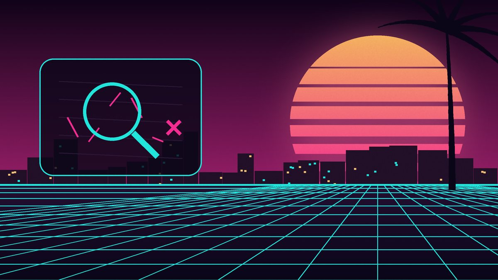

El granjero que se convierte en un gigante rojo en GTA 6: cómo llegar hasta él
Se llama Kyle, cultiva fresas y rocía sus plantas con una mezcla química de su invención. Su cadena de misiones termina detrás de un granero, con los agentes de Mutandis huyendo y un monstruo rojo que te pide un abrazo. Hay que llegar al capítulo 3.
Por Redacción Golpe Diario · Publicado el

Qué ha pasado
La guía más detallada es la de Game Rant, firmada por Jake Fillery el 20 de noviembre. Kyle no es un secreto suelto por el mapa: es una cadena de misiones de las de «Strangers & Freaks», y hay que ir por partes.
El arranque, según Game Rant, pide estar en el capítulo 2 o más adelante. Se va al Starlet Motel, a la recepción; fuera hay un cartel de «Pilot Wanted» con el teléfono de Kyle. La primera misión con él empieza al este de Frogswater. Unos días de juego después llega la segunda, que consiste en ir a por unos productos químicos.
Para el gigante hay que esperar al capítulo 3. Entonces Kyle manda un mensaje raro, «liiooi ihuertt», y eso desbloquea su última misión: volver a la granja, dar con el agente de Mutandis que hay allí, decirle que eres amigo de Kyle, seguirlo hasta el traje de materiales peligrosos y luego ir a la parte de atrás del granero.
Allí no hace falta arma. Game Rant recomienda cubrirse y esperar a que los agentes salgan huyendo. Cuando se calma, Kyle se sienta y pide un abrazo, y ahí hay elección: SuperHeroHype cuenta que se puede abrazarlo o rechazarlo, y que la decisión afecta al honor de Jason Duval, que es quien lo llama «Buddy». El abrazo quita algo de salud, aunque no mata, y Game Rant no da ninguna cifra. Al marcharse, Kyle te pide que lo busques, y la propia redacción de Game Rant admite que no ha conseguido encontrarlo.
Qué desencadena la transformación no está claro. Game Rant describe a Kyle como un hombre que lleva tiempo rociando sus cultivos con su propia mezcla de productos químicos para que crezcan enormes. SuperHeroHype lo resume como un granjero que experimenta con fresas gigantes y productos químicos, y cuenta que el experimento se le va de las manos y Kyle acaba atacando a la policía. Ninguna de las dos señala el momento exacto en que se transforma.
El parecido con Marvel es cosa de los jugadores, no de Rockstar. SuperHeroHype explica que Kyle destruye un helicóptero lanzándole un personaje del juego, y ahí la gente vio la escena de Red Hulk en «Captain America: Brave New World». El clip que lo puso a circular lo publicó la cuenta DiscussingFilm en X el 19 de noviembre, con el material atribuido a ishowspeedsui. Comic Basics, que compara las dos escenas, avisa de que las versiones no coinciden en el detalle: unas cuentan que destruye el helicóptero y otras que el helicóptero lo golpea. Los propios aficionados discuten si Rockstar lo hizo a propósito o es solo un guiño, y la compañía no ha dicho nada.
Qué significa para ti
- No lo busques antes de hora. La cadena empieza en el capítulo 2 y el gigante no sale hasta el capítulo 3.
- El punto de partida es el cartel de «Pilot Wanted» en la recepción del Starlet Motel: de ahí sale el teléfono de Kyle.
- Entre una misión y la siguiente pasan varios días de juego. Si no te llega el aviso, sigue jugando y vuelve luego.
- Para la última parte no necesitas armas. Cúbrete y espera, que los agentes acaban huyendo solos.
- El abrazo quita salud, aunque no mata. Si vas justo de vida, cúrate antes.
- Ninguna fuente habla de recompensa en dinero ni de objetos, así que no vayas por el botín.
Lo tienes también en la guía: Secretos y easter eggs de GTA 6: dónde están y cómo llegar
Contrastado con: Game Rant · SuperHeroHype · Comic Basics
Sigue leyendo
El ovni de GTA 6: déjate abducir en Kelly County y acabarás sacando a un alienígena de una base secreta
Empieza de madrugada, con un coche abandonado y una mujer flotando en un haz de luz al este de Port Gellhorn. Sigue con tres días de partida perdidos y un sueño con un código. Y termina en una base militar con un alienígena metido en una cápsula. Este es el camino entero, con lo que coincide en cuatro guías y lo que no.
Le apuntó con el francotirador desde un sitio alto y el peatón apareció detrás de él
Un jugador contó que apuntó de noche a un peatón que no se había dado cuenta y que el hombre se volvió invulnerable y se le plantó a la espalda. Nadie sabe si es un fallo o algo puesto a propósito. Lo que sí ha explicado Rockstar es que en GTA 6 la gente de la calle reacciona a las armas como no lo hacía en GTA 5.
En la radio de GTA 6 suena una canción inédita de D'Angelo, y está en los créditos oficiales
Worldwide FM, una de las emisoras de GTA 6, pone un tema de D'Angelo titulado Kamikazi que no se había publicado en ningún sitio. No es una suposición de la comunidad: la canción figura en los créditos de música de Rockstar.